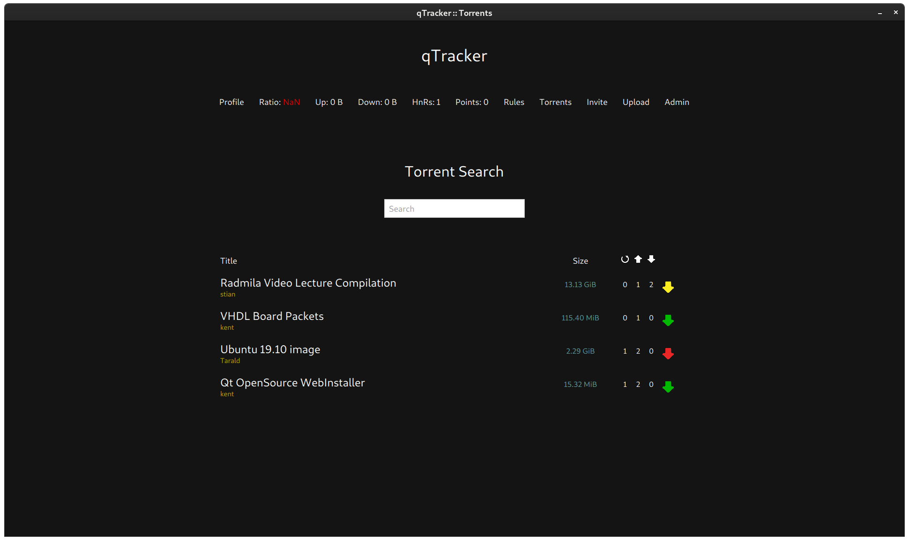
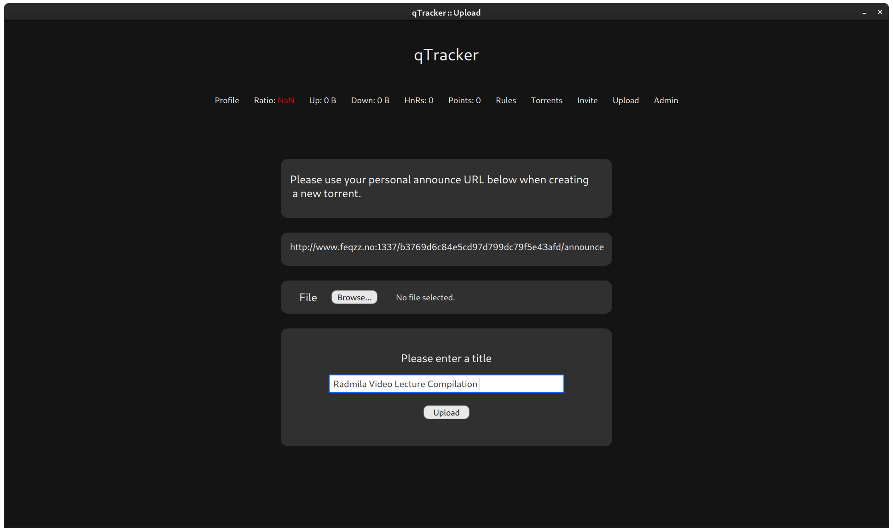
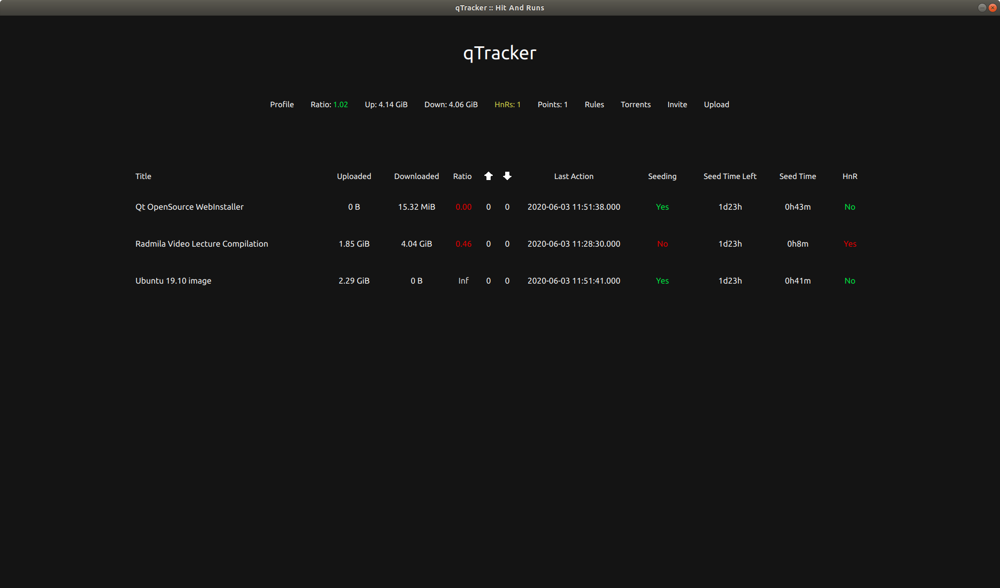

qTracker
A collaboration with Kent Odde and Tarald Vestbøstad.
The tracker has common private tracker functionalities such as ratio, hit and runs,
personal passkeys and bonus points.
The client is made with Qt (C++ and QML) whereas the tracker and server are made in C++.
Made in the spring of 2020.
Torrents Page
Upload Page
Hit and Run Page
Source: Client

Source: Tracker
Source: Server